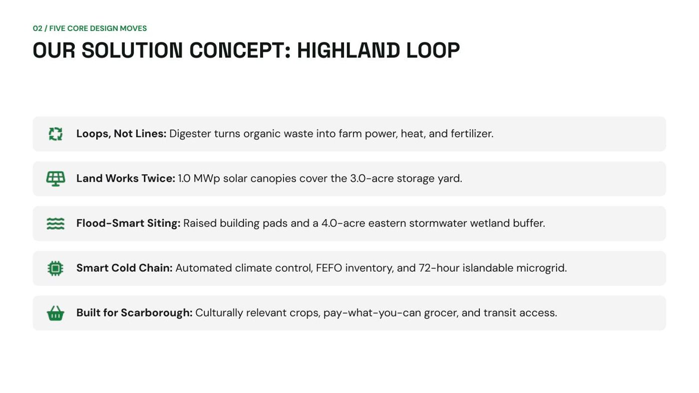
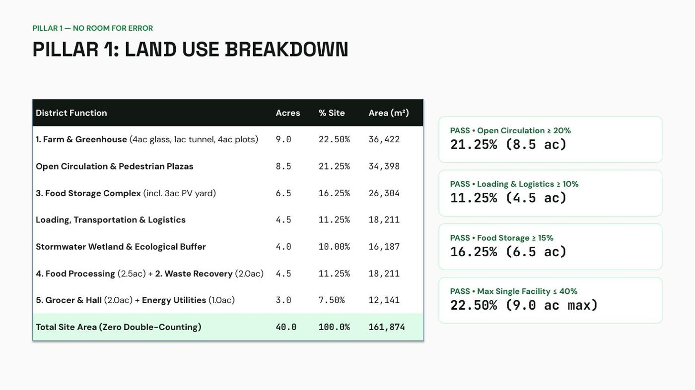
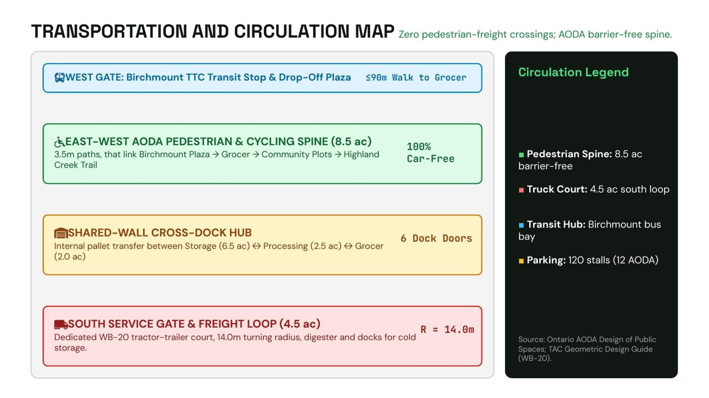
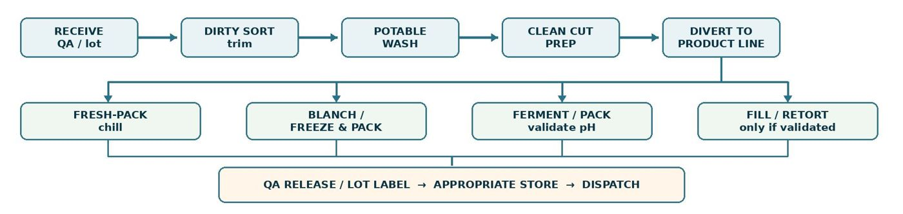
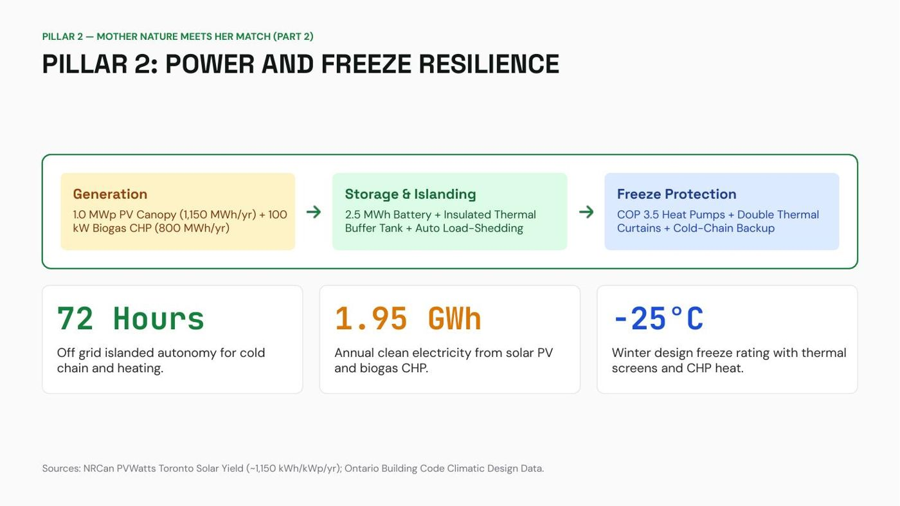
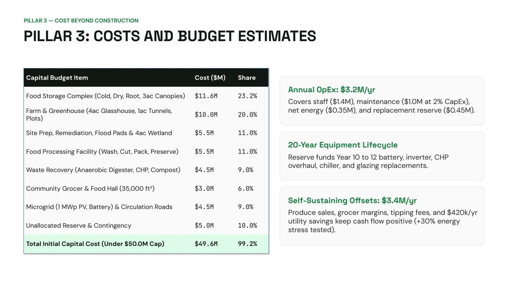
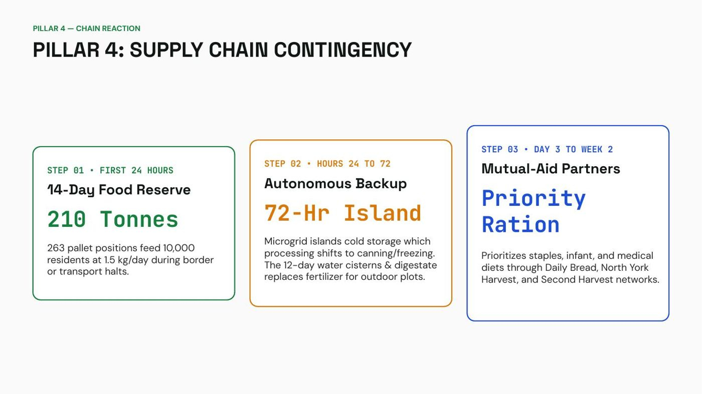
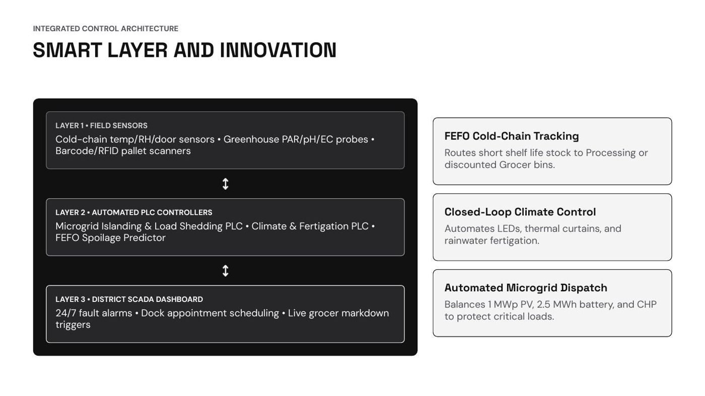

Back to projects
The Highland Loop
4th Place, MEC 2026 Innovative DesignA circular food, waste, and energy district on a 40-acre Scarborough site at Birchmount and Sheppard. Team: Jack of All Trades.
40 acSite, 9 integrated zones
650 t/yrProduce grown
$49.6MCapEx under a $50M cap
72 hrIslandable microgrid
The need
Toronto food bank visits reached 4.1M, up 340% since 2019, and 1 in 4 households is food insecure. Roughly 46.5% of Canadian food is wasted, and 41.7% of that is avoidable.
Five design moves
- Loops, not lines. A digester turns 4,000 t/yr of organic waste into power, heat, and fertilizer.
- Land works twice. 1.0 MWp solar canopies cover the 3-acre storage yard.
- Flood-smart siting. Raised building pads and a 4-acre stormwater wetland beside West Highland Creek.
- Smart cold chain. Automated climate control, FEFO inventory, and a 72-hour islandable microgrid.
- Built for Scarborough. Culturally relevant crops, a pay-what-you-can grocer, and transit access.

Engineering highlights
- Greenhouse: 4 ac at 40 kg/m2/yr gives about 650 t/yr, with rainwater capture roughly matching demand.
- Stormwater: a 166 mm design storm against 16,187 m3 of wetland storage passes.
- Energy: 1.95 GWh per year from solar PV and a 100 kW biogas CHP, backed by a 2.5 MWh battery.
- Resilience: a 210 t, 14-day food reserve for 10,000 residents.
- Land use passes every constraint: 21.25% open circulation, 11.25% logistics, 16.25% storage, 22.5% largest facility.
Site plan and systems








Team
Leo Lopez, Fernando Musa, Armen Sarkissian, Max Rudenko, Joshua Maksimishin, and Mike Vahe Mouyabed.